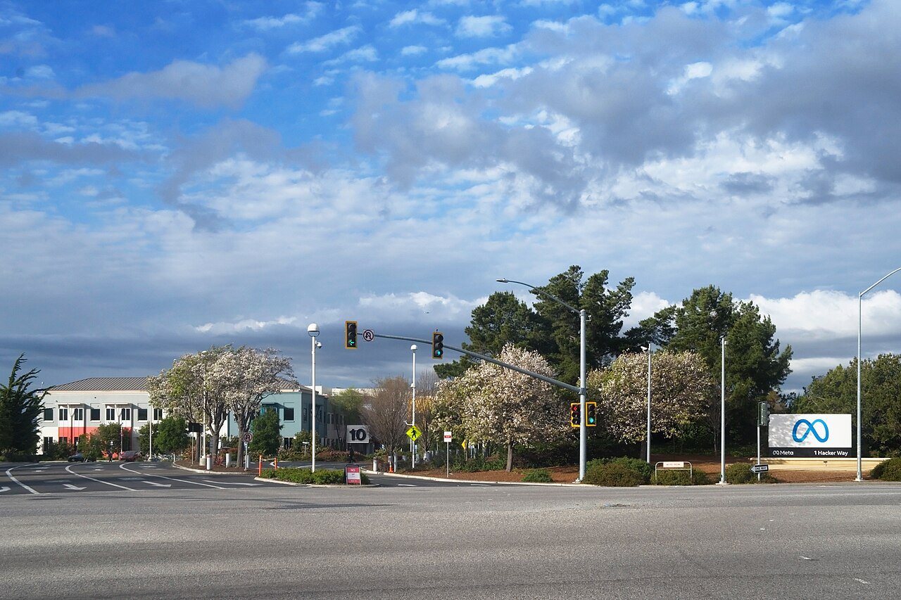

Vol. I · No. 57 · Tuesday, July 14, 2026 · 14 items · 6 sections · ~16 min read
A third night of American strikes and a reimposed blockade of Hormuz send oil to its biggest one-day jump in six years, on the very morning Wall Street's largest banks, the inflation print, and the new Fed chair's first testimony all land at once; an appeals court reopens a wave of Tylenol suits, Europe writes its largest defense-tech check, and the music industry's AI reckoning moves into court.
The Splash · The world · The Gulf · cross-spectrum LLLCR
A third night of strikes, a reimposed blockade, and a 20 percent Hormuz toll send oil soaring
The Strait of Hormuz, the chokepoint through which roughly a fifth of the world’s seaborne oil moves, seen from orbit. — Wikimedia Commons / NASA, public domain
American forces struck Iran for a third consecutive night on Monday, July 13, with the order given by President Trump in the late afternoon, according to CENTCOMInstitutionU.S. Central Command, which runs American military operations across the Middle East and is directing the current strike campaign against Iran., which said it hit air defenses, coastal radar, and missile and drone sites to keep degrading Iran’s ability to attack shipping in the Strait of HormuzPlaceThe roughly twenty-mile waterway between Iran and Oman through which about a fifth of the world’s seaborne oil passes. Closing it is Iran’s chief leverage over global energy prices.. Iran’s Revolutionary GuardInstitutionThe IRGC, Iran’s elite force, which controls the country’s missile arsenal and its posture in the Strait of Hormuz. said it had disabled two tankers in Omani waters and fired missiles and drones at American bases across Kuwait, Bahrain, Oman, Qatar, and, it claimed, Jordan.
Then Trump escalated the economics of the war. On Truth Social he said the United States is reimposing its blockade of Iranian ports, effective Tuesday at 4 p.m. New York time, and will charge a toll “at the rate of 20 percent on all cargo shipped” through the strait to cover the cost of securing it, a levy that would run tens of millions of dollars for a single supertanker against the roughly two million Iran had charged. The International Maritime OrganizationInstitutionThe United Nations agency that regulates global shipping. Its secretary-general rejected the Hormuz toll as contrary to the freedom of navigation through international straits. rejected the toll within hours, and Trump notified Congress of renewed military action under the War Powers ResolutionConceptThe 1973 law requiring a president to notify Congress within 48 hours of committing forces to hostilities and to end the action within 60 days absent authorization..
The market moved as if a chokepoint had closed. U.S. crude jumped 9.4 percent to $78.14 a barrel and Brent rose 9.6 percent to $83.30, the highest since mid-June and Brent’s largest single-day gain since May 2020. The month-old ceasefire, meant to hold open a sixty-day nuclear negotiating window, is now effectively dead, and the fight has narrowed to a single disputed question: whether Hormuz is open at all, with Washington insisting traffic still moves and Tehran declaring the strait shut.
“IMO stands firmly against charging fees for passage through straits used for international navigation.”
— Arsenio Dominguez, IMO Secretary-General, July 13
Framing noteThe right (Fox) frames a “massive U.S. response” to Iranian aggression and Trump holding the regime accountable; the left (The Intercept) and center-left (NPR) foreground that a naval blockade is itself an act of war and that the War Powers notice points to open-ended operations. Center wires (Bloomberg) will not even concede the basic fact of whether the strait is passable.
The Front · Markets & deals · New York
Wall Street's rarest morning: big-bank earnings, the inflation print, and Warsh's Fed debut all at once
Three market-moving events converge before Tuesday lunch. Goldman Sachs and Bank of America report second-quarter results before the open, alongside JPMorgan, Citigroup, and Wells Fargo; at 8:30 a.m. the Bureau of Labor Statistics releases the June Consumer Price IndexConceptThe government’s primary inflation gauge. June’s reading is expected to ease partly because energy prices fell that month, just as oil now spikes on the Gulf.; and at 10 a.m. Fed Chair Kevin WarshPersonSworn in as Federal Reserve chair this spring, delivering his first semiannual testimony to Congress on a Monetary Policy Report that struck an inflation-first tone. gives his first testimony as chair, to the House Financial Services CommitteeInstitutionThe House committee with jurisdiction over banking and the Federal Reserve; the Senate Banking Committee hears Warsh on Wednesday. before the Senate hears him Wednesday.
The numbers set a high bar. Goldman is seen earning about $14.51 a share, up from $10.90 a year ago, on roughly $16.2 billion of revenue as investment banking and trading run hot; its stock is up about 21 percent this year. Economists expect June headline inflation to cool to about 3.8 percent from 4.2, with core near 2.8, helped by the very energy prices the Hormuz shock is now reversing. That contradiction, softer past data against a fresh oil spike, is exactly the needle Warsh must thread, with the two-year Treasury yield near 4.23 percent, its highest since February, signaling a market that no longer assumes the next move is a cut.
Why it mattersThis is the capital-markets tape in miniature: the banks confirm whether the deal-and-trading machine a markets practice lives on is still humming, while the inflation print and the Fed chair jointly reset the rate path that prices every financing on the calendar. Rarely do all three land in the same three hours.
An appeals court revives 500-plus Tylenol-autism suits, reopening a mass tort
The Second Circuit on Monday revived more than 500 product-liability suits alleging that prenatal use of Tylenol and other acetaminophen products is linked to autism and ADHD, reopening litigation a trial judge had shut down. In a 64-page opinion, Circuit Judge Guido CalabresiPersonA senior Second Circuit judge and former dean of Yale Law School, among the most cited figures in American tort scholarship. held that U.S. District Judge Denise Cote had wrongly excluded the plaintiffs’ expert witnesses under the Daubert standardConceptThe Rule 702 test governing when scientific expert testimony is reliable enough to reach a jury. It is the gate a mass tort must pass to survive., writing that their methods “constitute acceptable interpretations of scientific evidence where scientists may, and in fact do, disagree.”
The reinstated experts include the dean of the Harvard School of Public Health and faculty from Einstein and Columbia; Cote had dismissed the consolidated cases in December 2024, and they now return to her for further proceedings. Calabresi pointedly did not decide whether acetaminophen causes autism, only that the question belongs to a jury. KenvueInstitutionThe consumer-health company spun off from Johnson & Johnson in 2023 that makes Tylenol. Its share price is exposed to the revived litigation., the Tylenol maker spun out of Johnson & Johnson, maintains the drug is safe and that no scientific consensus supports a causal link.
Why it mattersLoosening the Daubert gate in a multidistrict litigationConceptA federal device consolidating many similar suits before one judge for pretrial proceedings. A favorable evidentiary ruling can revive hundreds of cases at once. of this size revives enormous liability exposure overnight, and it marks a rare appellate pushback on how strictly trial judges screen scientific evidence, the exact hinge on which modern mass torts turn.
Capability, the labs, and the capital chasing them.
Artificial intelligence · Munich
Europe writes its biggest-ever defense-tech check: Helsing raises $1.8 billion at $18 billion
A mock-up of Helsing’s CA-1 Europa uncrewed combat aircraft on display at the ILA Berlin air show. — Wikimedia Commons / CC BY-SA
HelsingInstitutionA Munich-based defense-AI company building software for autonomous strike drones and underwater surveillance, now the most valuable startup in mainland Europe., the German defense-AI company, closed a $1.8 billion Series E on Monday at an $18 billion valuation, the largest defense-technology round in European history and enough to make it the most valuable startup in mainland Europe. The round was led by the growth investor DragoneerInstitutionA San Francisco crossover investment firm that backs late-stage private companies. Its lead here signals U.S. growth capital moving into European defense. alongside existing backers Lightspeed and Iconiq, with JPMorgan among the participants; demand reportedly ran well past the allocation.
Helsing, whose backers include the Spotify co-founder Daniel EkPersonThe Spotify co-founder and chairman, an early and vocal investor in Helsing and in European defense-tech more broadly., has moved beyond software into autonomous strike drones for contested, GPS-denied environments and underwater sensing. The valuation is up from roughly $12 billion just two months ago, and the company is now cast explicitly as Europe’s answer to the American defense unicorn AndurilInstitutionThe U.S. defense-technology firm founded by Palmer Luckey, the template for a venture-funded challenger to legacy prime contractors..
Why it mattersA rearming Europe is minting a defense-AI champion at software-company speed, and the cap table, a U.S. crossover fund leading, a big American bank riding along, shows how blurred the line between venture capital and the arms industry has become. This is the round that reprices what a European defense startup is worth.
Monzo's founder joins Anthropic, the latest name in its talent raid
Tom BlomfieldPersonThe British entrepreneur who co-founded the digital banks Monzo and GoCardless, a rare fintech-founder move into AI infrastructure. said Monday he is taking leave from Y CombinatorInstitutionThe Silicon Valley startup accelerator where Blomfield had been a group partner, backer of thousands of early-stage companies. to join Anthropic as a member of technical staff, working on the compute infrastructure that underpins Claude. He will report to co-founder Tom BrownPersonAnthropic co-founder and its chief compute officer, who leads the team building and scaling the systems that train and serve Claude., the firm’s chief compute officer.
Blomfield co-founded the British fintechs MonzoInstitutionOne of Britain’s largest digital-only banks, which Blomfield co-founded and once led as chief executive. and GoCardless, and the move continues a marquee-hiring streak that has brought Andrej Karpathy, the Nobel laureate John Jumper, and a former Microsoft Azure executive to Anthropic this year. A founder of consumer banks decamping to an AI lab’s infrastructure team is a small but telling marker of where ambitious operators now see the frontier.
Why it mattersThe AI talent war is now pulling in founders from entirely different industries, and Anthropic is visibly staffing up the unglamorous compute layer, the scarce constraint on frontier models, as it presses its enterprise push toward an eventual public listing.
Capital markets, dealflow, and the firms that lawyer them.
Markets & deals · Hsinchu
TSMC books a record quarter as the AI-chip crush outruns supply
A TSMC fabrication plant. The company’s advanced-node capacity is fully booked by its largest chip customers. — Wikimedia Commons / CC BY-SA
TSMCInstitutionTaiwan Semiconductor Manufacturing Company, the world’s largest contract chipmaker, which fabricates the advanced processors behind Nvidia, Apple, and the AI boom. reported record second-quarter revenue of about NT$1.27 trillion, roughly $39.5 billion, up 36 percent from a year earlier and its highest quarter ever. June alone brought in NT$442.68 billion, a monthly record and a 68 percent jump, unusual for a month that historically slows. The company’s most-advanced three-nanometerConceptThe leading-edge chip process node, measured in nanometers, that packs the most transistors. TSMC’s 3nm capacity is booked out by its top GPU and CPU customers. capacity is booked out by its leading customers.
TSMC now expects AI-related chips to generate more than $40 billion in 2026, about a quarter of total revenue, and guided full-year sales growth above 30 percent in dollar terms. Coming days after Nvidia shed roughly a trillion dollars of market value in a rotation out of the AI trade, the print is the cleanest supply-side read available: the foundryConceptA chip factory that manufactures designs for other companies rather than selling its own branded chips. TSMC is the dominant pure-play foundry. that actually makes the chips is selling everything it can produce.
Why it mattersTSMC is the least hype-prone gauge of whether the AI capital-expenditure boom is real, because it books revenue only when customers take physical delivery. A record quarter with sold-out advanced capacity says the demand behind the buildout is still outrunning the world’s ability to manufacture it.
A contested take-private for InMode pits an activist against its own CEO
Steel PartnersInstitutionA publicly traded diversified holding company and long-time InMode shareholder, here acting as an activist bidder against the company’s insiders., a longtime shareholder in the aesthetic-device maker InMode, has offered $16.75 a share in cash for the whole company, a 20 percent premium to InMode’s unaffected price and 55 cents above a competing buyout led by co-founder and chief executive Moshe Mizrahy at $16.20. Steel demanded a written answer from the independent directors by 5 p.m. Monday and warned it would pursue “all available remedies” if the board favored the insider bid.
The special committeeConceptA panel of a company’s independent directors formed to evaluate a deal free of insider conflicts, the standard governance defense in a management-led buyout. of independent directors let the deadline pass, saying only that it would review the proposal consistent with its fiduciary duties and would not comment further. That standoff, an outside cash bid topping a management-led take-privateConceptA transaction removing a public company from the stock market. When insiders lead it, the conflict between their roles as buyers and fiduciaries is acute., is the classic conflict a deal lawyer is hired to manage.
Why it mattersA higher outside bid against a CEO-led buyout is a live test of how independent directors discharge their duties when management is on the other side of the table, the fact pattern behind much of Delaware-style deal litigation.
A $21.6 million Sunny Isles condo tops the week's South Florida deal sheet
The week’s biggest South Florida residential trade was a six-bedroom condo at the Estates at AcqualinaPlaceA luxury oceanfront condominium development on Collins Avenue in Sunny Isles Beach, at the top of Miami’s ultra-prime market. in Sunny Isles BeachPlaceA barrier-island city north of Miami Beach, a magnet for foreign and out-of-state ultra-high-net-worth condo buyers., which sold for $21.6 million, or about $2,800 a square foot, according to The Real Deal’s latest weekly. In Palm Beach, a home on Esplanade Way changed hands for $13.4 million.
The top commercial deal was a 7,600-square-foot retail property on Collins Avenue in Miami Beach that sold for $14.4 million to an affiliate of the Delray Beach developer Kolter GroupInstitutionA large South Florida real-estate developer active in condominiums, hotels, and mixed-use projects across the region.. The steady churn of eight-figure trades continues to track the money still relocating into the region.
Why it mattersSouth Florida’s deal sheet is the ground-level read on the capital and wealth migrating into a market a Miami-based practice serves, one eight-figure closing at a time.
The bench, the regulators, and the business of the profession.
Law & the courts · New York
A star private-equity partner leaves Weil for McDermott, and the lateral market keeps roaring
A McDermott office. The firm, recently rebranded McDermott Will & Schulte, is building out its private-equity bench. — Wikimedia Commons / CC BY-SA
Robert RizzoPersonA private-equity dealmaker with more than two decades advising sponsors on buyouts and M&A, now moving to co-lead McDermott’s PE group., a leading private-equity dealmaker, is leaving Weil GotshalInstitutionWeil, Gotshal & Manges, a top-tier New York firm long known for its private-equity and restructuring practices. for McDermott Will & SchulteInstitutionThe firm formerly known as McDermott Will & Emery, renamed after its combination with Schulte Roth & Zabel, now expanding aggressively in private equity., the firm recently renamed from McDermott Will & Emery, where he will serve as global co-head of the private-equity group. Rizzo brings more than twenty years advising sponsors on buyouts and mergers.
The move fits a lateral marketConceptThe market for partners moving between firms. A hot lateral market signals firms competing hard for revenue-generating talent and rising partner compensation. running at a five-year high, with about 3,009 partner moves in 2025, up 10 percent, and firms including Kirkland, Sidley, Simpson Thacher, and Paul Hastings all poaching New York partners even through the slow summer. Private equity is the practice everyone is buying for, because it is where the deal fees are.
Why it mattersThe lateral market is the clearest signal of where BigLaw sees its next dollar, and a marquee PE partner changing letterhead maps the practice areas and firms a capital-markets lawyer’s career runs through.
The full Fifth Circuit scraps a bond-hearing win for detained immigrants
The Fifth CircuitInstitutionThe federal appeals court covering Texas, Louisiana, and Mississippi, among the most consequential benches for immigration and administrative law. voted to rehear en bancConceptA rehearing before all active judges of a court rather than the usual three-judge panel, reserved for cases of unusual importance. It wipes out the panel decision. a case in which a three-judge panel had, on July 2, granted immigrants held under mandatory detention a right to a bond hearing after 90 days. The vote to rehear vacates that panel ruling, so it is no longer binding, and leaves the government’s no-bond policy in effect while the full court reconsiders.
The suit was brought by three longtime Texas residents, all fathers of U.S.-citizen children with no criminal history, detained after routine traffic stops. Their claim is that indefinite detention under mandatory detentionConceptDetention required by statute (8 U.S.C. §1226(c)) for certain noncitizens during removal proceedings, without an individualized bond hearing. without any individualized hearing violates due process. The reversal deepens a circuit splitConceptA disagreement among federal appeals courts on the same legal question, the condition most likely to draw Supreme Court review. already forming on bond-hearing rights, the classic setup for eventual Supreme Court review.
Why it mattersA same-court reversal this fast, vacating a constitutional win days after it landed, shows how volatile immigration-detention law has become, and the maturing circuit split points the whole question toward the Supreme Court.
Consequential geopolitics, and how each side frames it.
The world · Port Sudan · single-tier coverage: C
A Sudanese court sentences its paramilitary chief to death for the Darfur genocide
Mohamed Hamdan Dagalo, known as Hemedti, leader of the Rapid Support Forces, sentenced to death in absentia. — Wikimedia Commons / CC BY-SA
An anti-terrorism court in Port Sudan sentenced HemedtiPersonMohamed Hamdan Dagalo, commander of the Rapid Support Forces, Sudan’s paramilitary that has fought the national army since April 2023., the leader of the Rapid Support ForcesInstitutionThe RSF, a paramilitary grown out of Darfur’s Janjaweed militias, now controlling much of western Sudan in a war with the army., and 15 senior commanders to death in absentia on Monday for war crimes, crimes against humanity, and genocide. Presiding Judge Mohamed Al-Amin held Hemedti responsible for the genocide of the Masalit people and the 2023 killing of the West Darfur governor, and ordered the confiscation of RSF assets and Interpol arrest notices.
Among those convicted were Hemedti’s brother and deputy, Abdelrahim Hamdan Dagalo. It is the first judicial conviction of the RSF’s top leadership since a war that has killed more than 150,000 people and displaced roughly 12 million. The effect is symbolic for now: the RSF still holds much of the country, and the verdict comes from the army-aligned government in Port SudanPlaceThe Red Sea city serving as the wartime seat of Sudan’s army-led government, which prosecuted the case against its RSF adversaries., its adversary in the war.
Why it mattersA death sentence for a sitting paramilitary commander is a landmark in accountability for the world’s largest displacement crisis, even as its wartime provenance and Hemedti’s freedom make it a statement of intent rather than justice delivered.
France licenses Ukraine to build French missiles as ten nations back a homegrown interceptor
Beyond the Paris coalition summit already reported, France granted Ukraine a license to manufacture French-designed weapons on its own soil, including AASM Hammer glide bombs, Aster air-defense interceptors, and SCALPConceptThe French name for the Storm Shadow, a long-range air-launched cruise missile Ukraine has used to strike targets deep inside Russian-held territory. cruise missiles. Separately, Ukraine and nine partners launched a coalition to push Kyiv’s own FreyjaConceptA Ukrainian-developed anti-ballistic-missile interceptor the new coalition aims to make operational within a year, an alternative to scarce American Patriots. anti-ballistic interceptor to operational status within a year.
Zelensky asked for 300 Patriot interceptors for the winter, about 100 a month. Hours after the coalition was announced, Russia launched a fresh ballistic-missile attack on Kyiv, setting fires in one district, while Ukraine’s drone forces struck 15 vessels of Russia’s shadow fleetConceptThe aging, opaquely owned tankers Russia uses to move oil around Western sanctions. Ukraine has begun targeting them directly., the aging tankers Moscow uses to move sanctioned oil.
Why it mattersLicensing domestic production of French missiles deepens Ukraine’s defense-industrial bond with Europe, and the Freyja push shows the continent hedging against a shortage of American Patriots as the war grinds toward another winter.
The business and law of what we watch, hear, and play.
Entertainment & EASL · San Francisco
A judge tosses a second copyright suit against Meta over production music

Meta’s Menlo Park headquarters. A federal judge dismissed Epidemic Sound’s second music-copyright suit, with leave to amend. — Wikimedia Commons / CC BY-SA
U.S. District Judge Jacqueline Scott Corley in Northern California dismissed a copyright suit by Epidemic SoundInstitutionA Swedish production-music company that licenses royalty-free tracks to creators, suing Meta over unlicensed use of its catalog., the Swedish production-music company, which had accused Meta of making its tracks available to billions of users without a license. The court found Epidemic had not plausibly alleged substantial similarityConceptThe core test of copyright infringement: whether the accused work is close enough to the protected one that an ordinary listener would recognize the copying. between its recordings and what Meta offered, a pleading defect rather than a merits loss.
Because the dismissal turned on how the complaint was drafted, Corley granted leave to amendConceptA court’s permission to refile a corrected complaint. It signals the case is not dead, only sent back to be pleaded properly., so Epidemic can refile a corrected version. It is the second suit the company has brought against MetaInstitutionMeta Platforms, whose Instagram and Facebook libraries let users add music to posts, the practice at the center of the licensing dispute. before the same judge, both testing where platform liability begins for music users attach to their posts.
Why it mattersHow strictly courts demand that music-infringement claims be pleaded shapes every licensing negotiation between rights holders and the platforms, and the substantial-similarity bar is the doctrine now doing the sorting.
The record industry proposes AI labels, and Suno says transparency matters
A coalition of the world’s major music bodies, including the RIAAInstitutionThe Recording Industry Association of America, the trade group for U.S. record labels and the coordinator of the major-label suits against AI music firms., the international federation IFPIInstitutionThe global body representing the recorded-music industry across markets, co-author of the proposed AI-labeling standard., the Recording Academy, and SAG-AFTRA, proposed a voluntary standard for labeling AI in recordings, splitting tracks into “AI-Generated” and “AI-Assisted” tiers. The first covers songs whose primary creative elements are machine-made; the second, human works that used AI tools.
SunoInstitutionA generative-music startup that turns text prompts into finished songs, a defendant in the major labels’ copyright-infringement suits., the AI-music startup that the labels are separately suing for copyright infringement, responded that “transparency is important,” pointing to its work on watermarking and audio fingerprinting while arguing that artists and platforms should decide how labels are applied. The overture arrives with the underlying infringement fight still live in court.
Why it mattersThe industry is trying to set the terms of AI music through a private standard rather than wait on a verdict, and a defendant embracing transparency mid-litigation is a preview of how disclosure, not just infringement, becomes the next battleground in entertainment law.